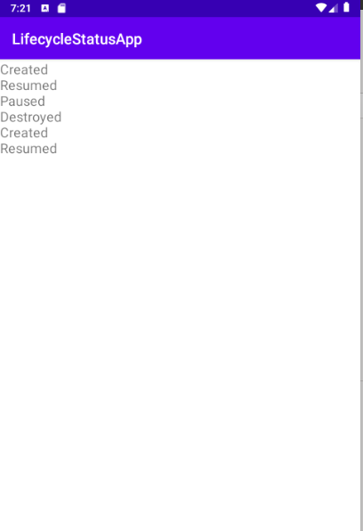
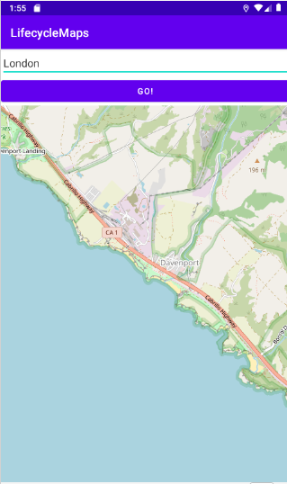

Mobile Development and 3D Graphics - Part 2
More on Lifecycle and Coroutines
Today we will continue to look at further Android architecture components by examining lifecycle observers: objects which can observe the lifecycle of an activity or fragment. We will also look a little more at the use of coroutines in Android.
More on Android lifecycle
A reminder of the Android lifecycle
You will remember from last year that Android activities have a lifecycle, with certain methods being called when the activity is in a certain state. For example, onCreate() is called when the activity is first created; onPause() is called when the activity is hidden; onResume() is called when the activity becomes visible again and onDestroy() is called when the activity is destroyed. The diagram below shows the lifecycle of an activity:

Furthermore, other components (such as fragments, and services, which we will come onto soon) also have a lifecycle with very similar methods.
Abstracting out the lifecycle
What is the consequence of this? As many different Android components (e.g. activities and fragments) have a lifecycle, the developers of Android decided it would make sense to abstract out the lifecycle functionality into a Lifecycle class, and make all components with a lifecycle (Activity, Fragment, etc) contain a Lifecycle object. The Lifecycle object contains the current state of the app, which could be (ref: Android documentation):
Lifecycle.State.CREATED - following onCreate() and before onStart()Lifecycle.State.STARTED - following onStart() and before onResume()Lifecycle.State.RESUMED - following onResume()Lifecycle.State.PAUSED - following onPause() and before onStop()Lifecycle.State.STOPPED - following onStop() and before onDestroy()Lifecycle.State.DESTROYED - following onDestroy()
We can obtain a component's Lifecycle object using its lifecycle property, and test for its state with lifecycle.currentState. This allows us to write code which will only run if the component is in a particular lifecycle state.
For example, inside an activity or fragment we could have:
if(lifecycle.currentState == Lifecycle.State.RESUMED) {
// code which should only run if we're in the "resumed" state
}
Furthermore, we can use isAtLeast() to test whether the component is in at least a certain state. For example:
if(lifecycle.currentState.isAtLeast(Lifecycle.State.STARTED)) {
}
could be use to test that we are at least in the STARTED state. So the code inside the if statement would run if we are either in the STARTED state or in the RESUMED state. This can be useful if we want to execute code which depends on the activity or fragment being fully created (we could use isAtLeast(Lifecycle.State.CREATED)) or fully visible.
Lifecycle Observers
We can attach one or more lifecycle observers to any component with a lifecycle. Often, functionality might depend on the lifecycle of the component. For example, in a GPS application, we might only want to receive GPS updates when the activity or fragment showing the location is currently visible. Or, in a game, we would want the game to stop playing when the activity or fragment hosting the game is not currently visible (e.g. when a call is received). We could put this functionality in the relevant activity or fragment. However, as we saw last week, this can lead to large and bloated activities or fragments, and thus they do not have high cohesion.
So instead, we can create one lifecycle observer for each lifecycle-related behaviour we want to add. The intention is to put the code in the lifecycle observer, to keep the activities and fragments small and "clean". So we could, for example, create a lifecycle observer for turning the GPS listener on and off (so it turns on when the activity or fragment resumes, and off when the component pauses) or another lifecycle observer for stopping and starting a game when its parent component pauses and resumes.
Lifecycle observers are known as lifecycle-aware components because they react to the lifecycle of another component, such as an activity or fragment.
Creating a Lifecycle Observer
Lifecycle observers need to inherit from DefaultLifecycleObserver and override the appropriate methods, i.e. onCreate(), onPause(), onResume() etc. The methods however have different signatures to the usual ones: they all take a parameter of type LifecycleOwner. What is this? The LifecycleOwner is the parent component that owns the given lifecycle, i.e the Activity, Fragment, etc which launched the lifecycle observer.
Lifecycle observers are created in the normal way, by instantiating an object of our lifecycle observer class. This allows us pass in any data the lifecycle observer needs, such as a ViewModel
An example of a lifecycle observer
The code below shows an example of a lifecycle observer.
import androidx.lifecycle.DefaultLifecycleObserver
import androidx.lifecycle.LifecycleOwner
class TestLifecycleObserver: DefaultLifecycleObserver {
override fun onCreate(owner: LifecycleOwner) {
}
override fun onPause(owner: LifecycleOwner) {
}
override fun onResume(owner: LifecycleOwner) {
}
override fun onDestroy(owner: LifecycleOwner) {
}
}
You can see that you create methods corresponding to the equivalent activity or fragment lifecycle method, but supply the LifecycleOwner as an argument.
Creating a lifecycle observer
As explained above, we can create a lifecycle observer from a component, such as an activity or fragment. Here is an example. Note how we add the lifecycle observer to the lifecycle attribute of our activity, which represents the Lifecycle object (discussed above) associated with the activity.
class MyActivity : AppCompatActivity() {
override fun onCreate(savedInstanceState: Bundle?) {
val lifecycleObserver = TestLifecycleObserver()
lifecycle.addObserver(lifecycleObserver)
}
}
We could pass in a ViewModel to the lifecycle observer, e.g.:
class TestLifecycleObserver2(val viewModel: MyViewModel) : DefaultLifecycleObserver
and then we could access the ViewModel in any method of TestLifecycleObserver. We'd pass the ViewModel across from the activity, e.g:
class MyActivity : AppCompatActivity() {
val viewModel: MyViewModel by viewModels()
override fun onCreate(savedInstanceState: Bundle?) {
val lifecycleObserver = TestLifecycleObserver2(viewModel)
lifecycle.addObserver(lifecycleObserver)
}
}
More on coroutines
Last year we looked at coroutines in the SQLite and Room topic. A coroutine is a block of code which can run either in a foreground or a background context, and can switch contexts (switch between foreground and background). This is because a coroutine can be suspended. So when we switch to the background context, the code in the foreground context is suspended while the code running in the background, completes. We need to launch a coroutine from a scope, which represents the scope the coroutine "lives" in (often the Android lifecycle). Here is an example of an Android coroutine:
lifecycleScope.launch {
// This lambda is the coroutine
// Interact with UI in the foreground (read a search query)
val searchQuery = getDataFromUI()
var results = ""
// Switch to a background context to communicate with the web and with a
// database. The foreground code suspends while waiting for the background code to complete
withContext(Dispatchers.IO) {
results = fetchDataFromWeb(searchQuery) // must be done in the background
saveToRoomDatabase(results) // must be done in the background
}
// The foreground code resumes here
// Update the UI with the data from the web
updateUI(results)
}
We can actually put code which switches context in a suspend function and call that from our coroutine. For example:
suspend fun search() {
// Interact with UI in the foreground (read a search query)
val searchQuery = getDataFromUI()
// Switch to a background context to communicate with the web and with a
// database. The foreground code suspends while waiting for the background code to complete
withContext(Dispatchers.IO) {
results = fetchDataFromWeb(searchQuery) // must be done in the background
saveToRoomDatabase(results) // must be done in the background
}
// The foreground code resumes here
// Update the UI with the data from the web
updateUI(results)
}
A suspend function is a function in which the code can be suspended to allow other code to run in the background; it's always called from a coroutine. So we could call it like this:
lifecycleScope.launch {
search()
}
Typically coroutines are implemented using threads. A thread is a general concept in programming, used by many languages (Java, C and C++ as well, for example) and is a separate strand of execution. We have the main thread, which corresponds to the UI thread in Android or the main() method in console-mode Java. Then, we can run separate background threads to do background work (such as network communication) without blocking the main thread and causing it to become unresponsive. Kotlin coroutines are typically implemented using threads (with the Dispatchers.Main context the main Android UI thread) however, the architecture of coroutines is such that they could be implemented using something else if it was seen as desirable.
Using coroutines outside Android
To more fully understand coroutines, it is helpful to see examples of their use outside of Android, in console-mode applications. Please see these notes; we may have time to look at them in the lecture, but if not, please read in your own time and let me know if you have any questions.
Coroutines from ViewModel
So far, all our coroutines have been launched from an activity. However they can be launched from any coroutine scope. The most usual scope is the lifecycleScope which is available from any component with a lifecycle (so fragments as well as activities). An interesting feature of coroutines launched from a lifecycleScope is that they are automatically terminated if the parent component is destroyed.
Interestingly, though, a ViewModel has a scope to launch coroutines, viewModelScope. This is useful, as the ViewModel is the recommended place to send network requests (Android documentation). Given the ViewModel's role is to fetch data and prepare it for presentation, it makes sense for network communication to be placed there. So a method of your ViewModel can launch a coroutine which fetches data from a server (in a background context) then updates some LiveData which can be observed by an activity or fragment.
So inside a ViewModel we can launch a coroutine as follows:
viewModelScope.launch {
}
Additional points on using coroutines with lifecycle-aware components
It's worth reading this article in the Android documentation. These notes cover how you can control coroutines according to the current lifecycle state.
A full example - a timer application
Here is a full example, which uses a LifecycleObserver as well as a coroutine to display a timer in seconds. The timer pauses when the activity pauses, but is not reset - when the activity resumes, the timer resumes where it left off.
Firstly, the main activity. Note how we create a TimerLifecycleObserver (our own custom lifecycle observer) and attach it to the activity's lifecycle. The activity also observes a piece of LiveData, liveTime, from the view model and updates a text view accordingly.
package com.example.lifecycle1
import androidx.appcompat.app.AppCompatActivity
import android.os.Bundle
import android.widget.TextView
import androidx.activity.viewModels
import androidx.lifecycle.Observer
class MainActivity :AppCompatActivity() {
val timerViewModel: TimerViewModel by viewModels()
override fun onCreate(savedInstanceState: Bundle?) {
super.onCreate(savedInstanceState)
setContentView(R.layout.activity_main)
val observer = TimerLifecycleObserver(timerViewModel)
this.lifecycle.addObserver(observer)
timerViewModel.liveTime.observe(this, Observer {
findViewById(R.id.tv1).text = "$it seconds have passed."
})
}
}
Secondly, the view model:
package com.example.lifecycle1
import androidx.lifecycle.MutableLiveData
import androidx.lifecycle.ViewModel
class TimerViewModel : ViewModel() {
var time: Long = 0
set(value) {
field = value
liveTime.value = value
}
var liveTime = MutableLiveData<Long>()
}
This is a simple ViewModel that holds a time value.
Thirdly, the LifecycleObserver:
package com.example.lifecycle1
import androidx.lifecycle.*
import kotlinx.coroutines.Dispatchers
import kotlinx.coroutines.launch
import kotlinx.coroutines.withContext
class TimerLifecycleObserver(val viewModel: TimerViewModel) :
DefaultLifecycleObserver {
private var running = false
override fun onCreate(owner: LifecycleOwner) {
var currentTime: Long
var lastTime = 0L
var secondsPassed = 0L
// Launch the coroutine from the lifecycleScope of the lifecycle owner (i.e. the Activity in this case)
owner.lifecycleScope.launch {
// Implement the counter in the background so it doesn't block the
// main thread
withContext(Dispatchers.IO) {
// Display the timer for one hour (3600 seconds)
while (secondsPassed < 3600) {
// Only update the time if we are running
if (running) {
currentTime = System.currentTimeMillis()
// Update secondsPassed if 1000 milliseconds have passed
if (currentTime - lastTime > 1000) {
lastTime = currentTime
secondsPassed++
// Must switch back to main context as modifying
// ViewModel will result in a UI update
withContext(Dispatchers.Main) {
viewModel.time = secondsPassed
}
}
}
}
}
}
}
// Stop the time update when we pause
override fun onPause(owner: LifecycleOwner) {
running = false
}
// Start the time update when we resume
override fun onResume(owner: LifecycleOwner) {
running = true
}
}
This is a bit more complex but note how we override the onCreate(), onPause() and onResume() methods. First, in the onCreate() we:
- Launch a coroutine from the scope of the lifecycle owner (
owner.lifecycleScope), which will be the activity in this case.
- This coroutine is used to create a timer. It includes a loop which updates a counter every second, but because this is being done in the background (i.e. in the
Dispatchers.IO context) it will not update the main thread and the UI will not freeze and become unresponsive.
- The coroutine's loop will continue until one hour (3600 seconds) have passed.
- We update the
secondsPassed variable if 1000 milliseconds (1 second) have passed since the last update, but only if the variable running is true. This is related to whether the lifecycle owner (the activity) is in the resumed state, as discussed below.
- When
secondsPassed is updated, we update the time property of the view model, so it will be displayed to the user (due to the live data being observed from the activity).
- In
onPause() and onResume(), we set the variable running to false and true, respectively. This will mean that, due to the logic of the coroutine, the secondsPassed variable will stop updating if the lifecycle owner is currently paused.
Exercises
- Develop a simple application containing an activity, a view model and a lifecycle observer, to log lifecycle events in a
TextView. It should look like the screenshot below:

- The view model should contain a
MutableList of strings, and provide LiveData returning that list - this is similar to what you did last week. It should have a addStatusMessage() method which adds a string to the MutableList.
- The lifecycle observer should add an appropriate status message to the
ViewModel as follows:
- In
onCreate(), the message "Created" should be passed to the view model via the addStatusMessage() method;
- In
onResume(), the message "Resumed" should be passed to the view model via the addStatusMessage() method;
- In
onPause(), the message "Paused" should be passed to the view model via the addStatusMessage() method;
- In
onDestroy(), the message "Destroyed" should be passed to the view model via the addStatusMessage() method;
The intention is to keep a log of lifecycle changes, to be displayed on the activity.
- In the activity, observe changes in the live data (containing the list of status messages) and update a
TextView to display all of them - like the examples last week.
- Run the app and try doing things which will change the lifecycle state, such as rotating the device (destroy/create) or moving to the app's home screen (via the rectangular button; this will cause a pause, not a destroy) and then returning to the app (this will cause a resume). Look at the status messages displayed on the
TextView as a result.
- Clone this GitHub repository:
https://github.com/nwcourses/LifecycleMapsStarter.git
This is a starter project for a GPS mapping application making use of a lifecycle observer and coroutines. It should have this functionality:
- The map should show the current GPS location;
- The app should include a search feature, allowing the user to search by place. This uses a web API to look up the latitude and longitude of the place the user entered. The map will then move to that location.
The app will look something like this:

It includes:
- a main activity;
- two fragments (one to allow the user to enter a place, and another to show the map);
- a
ViewModel, which should store the current lat/lon and provide that as LiveData;
- a
LifecycleObserver.
Complete this app so that it fully works. I have already added the permissions management code to the activity, so you don't need to worry about that. You need to:
- If you finish, try out the exercises in the further coroutines notes.
References